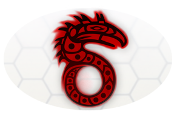

本文件食用指南
爲了提高閱讀體驗，本文件對規則原文進行了大量的再編排。如果你留意到不同章節中有重複內容，那是有意為之，不必驚慌。
除此之外，本文件收錄了大量「臨時（Provisional）」勘誤，以及官方論壇的主流見解和FAQ中的補充內容。這也意味著，本文件可以被認為是「摻入了大量私貨」的。如果你希望獲得一個原汁原味的體驗，請使用規則原文。
勘誤：由於本文件來自眾多譯者，編者難以對數百萬字的內容一一比對原文勘誤，因此如果您在閱讀中有任何建議，或者發現任何錯誤，無論是翻譯錯誤還是排版錯誤，無論是內容錯誤還是錯字筆誤，還請事無鉅細地在下面的鏈接帖子內提醒編者。如果你對出一份力感興趣的話，期待你的加入！
參與制作者
以下參與制作者（參與翻譯/校對/潤色/編排等）按字母順序列出；還有更多朋友貢獻了幫助，在此一併致意。
| · Anarithka(trow) | · jimraynor | · 不會飛的文文 | · 秘銀楓葉 | · 武具辭典 |
| · Ashwinnie | · joyce | · 蒼龍 | · Preyst | · 橡木盾 |
| · Bellicosa | · marfish | · 大漠 | · 失語 | · 玄伏 |
| · DB | · onceHNIS | · 淡 | · 水果Saove | · 妖貓 |
| · giligilipony | · Razr | · 地神 | · 唐 | · 吟遊詩人貓頭鷹 |
| · Gunslinger | · Rubidium | · 烤麩 | · 天命君 | · 中子星月餅 |
| · hyno111 | · 安姆的閑人 | · 空気 | · 我還是我 | · 豬之憂傷 |
特別感謝
來自復旦跑團社的勇者們，他們為本文件最後階段提供重要推力；
Pathfinder_CHM_v0.94的編者們，為本文件的排版提供指導（雖然他們不知道）
；
其他或多或少參與過本文件製作的熱心朋友/隨緣校對。
符號標記
|
符號標記 |
|
符號說明 |
|
符號範例 |
|
(
) |
|
通用，一般說明, 英文對照 |
|
（hello, world!） |
|
［］ |
|
關鍵詞，專精，配件，程式 |
|
［定點跳傘］
［型號］ |
|
｛｝ |
|
數值，數值計算 |
|
｛檢定成功＋體質屬性等級｝ |
|
〖
〗 |
|
邊欄, 表格，引用 |
|
〖建造與修理表〗 |
|
【
】 |
|
檢定上限，界限，引用擴充套件 |
|
【精神】【準度】 |
|
「
」 |
|
怪物能力，網精能力，特質 |
|
「天生法術」「小魔怪」 |
|
『
』 |
|
法術, 異能，儀式，複合程式 |
|
『火球術』『屬性提升』 |
|
〈
〉 |
|
技能，動作 |
|
〈手槍〉〈準備武器〉 |
|
<
> |
|
賽博改造，生體改造 |
|
<數據接口><肌肉替換> |
|
範例 這是內容 |
|
這是邊欄TOPIC 這是內容 |
設定的顏色
細則的顏色(232,72,0)
法術/異能/能力的顏色